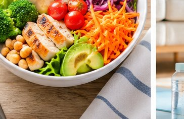
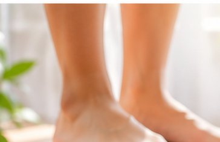
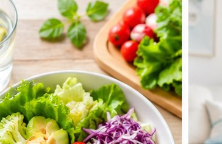
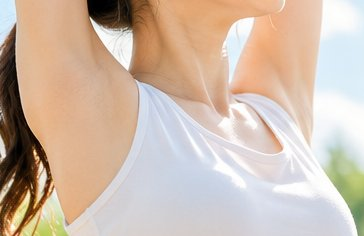
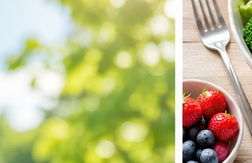
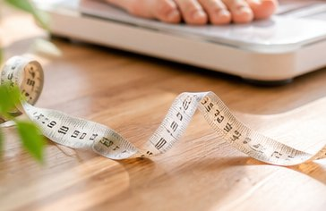
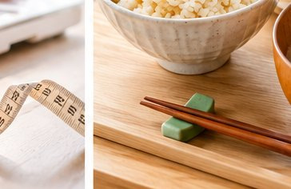
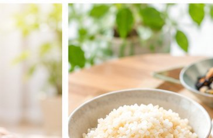
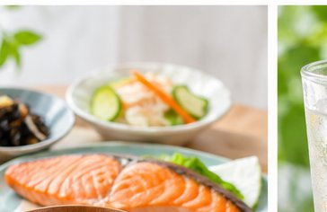
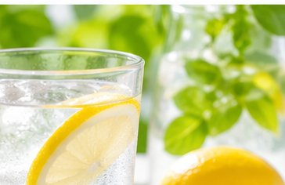

RECOMMENDED
結果TOP3におすすめのダイエット食品・サービス
無理なく続けるための、栄養バランスの良いミールキットや運動習慣をご紹介。


YOUR WORRIES
ダイエットが続かない原因は「自分に合わない方法」を選んでいるからかもしれません。
FEATURES
8問に答えるだけ。あなたの体質・生活に合った続けられる方法が見つかります。
たった8問・約1分。体型・目標・食事・運動の傾向から最適なダイエット法を即判定します。
回答パターンA・B・Cを並べて比較。競合にない機能で「どの条件が自分に効くか」が一目で分かります。
回答を1つ変えるとTOP3がその場で変化。理想に近づく条件を試しながら探せます。
なぜその方法が合うのかをAIが分かりやすく解説。納得して始められるから続けられます。
HOW IT WORKS
面倒な入力や登録は不要。スマホでサッと、続けられる方法が見つかります。
体型・目標・食事・運動・生活リズムなど、選ぶだけの簡単な8問。約1分で完了します。
5種類のダイエット法の相性をスコア化。あなたに合う上位3つを、その理由とともに表示します。
条件を変えながら結果の変化を確認し、体重推移グラフと実行プランで具体的に動き出せます。
WHY DIFFERENT
「診断して終わり」ではありません。比較・シミュレーション・AI解説まで無料で。
| 機能 | この診断 | 一般的な診断 |
|---|---|---|
| 8問の高速診断 | ◎ | △ |
| 複数パターン比較 | ◎ | ✕ |
| リアルタイムシミュレーション | ◎ | ✕ |
| AIによる理由の解説 | ◎ | △ |
| 登録・料金 | 不要・無料 | 登録要 |
PATTERN COMPARE
「運動を増やしたら？」「食事を変えたら？」条件ごとの相性を並べて確認できます。
パターンA・B・Cを切り替えると、各ダイエット法のマッチ度がリアルタイムで変化。あなたの生活でいちばん続く方法を、データで選べます。
比較してみる →ACTION PLAN
診断後は「何をすればいいか」が具体的に。実行プランと体重推移グラフで迷いません。





RECOMMENDED
無理なく続けるための、栄養バランスの良いミールキットや運動習慣をご紹介。


VOICE
自分に合う方法が分かって、続けられるようになったという声が多数。
「何をやっても続かなかったのに、診断で糖質制限が合うと分かってから2週間で-2kg。理由まで説明してくれるので納得して続けられました。」

「運動が苦手なので諦めていましたが、シミュレーションで食事中心のプランを発見。1週間プランが具体的でそのまま実行できました。」

「パターン比較が便利。仕事が忙しい時期と落ち着いた時期で合う方法が変わると分かり、無理なく切り替えられています。」

FAQ